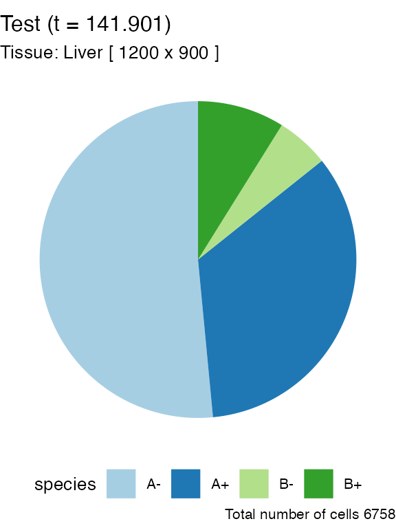
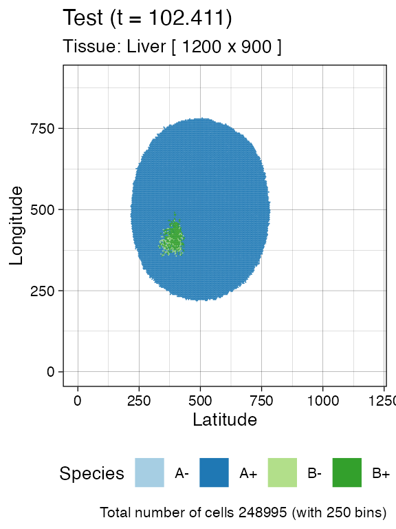
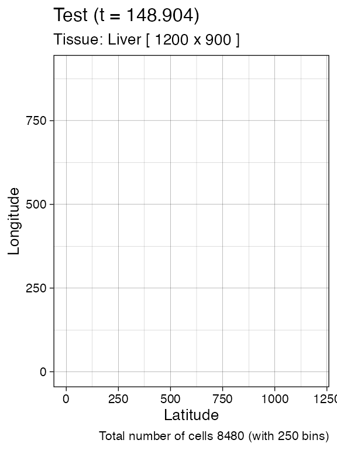
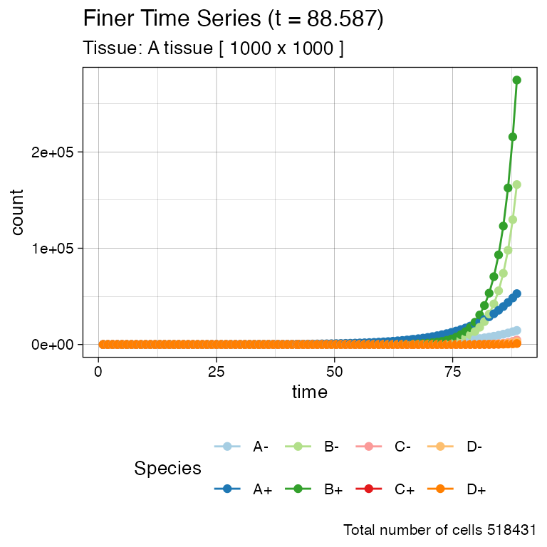
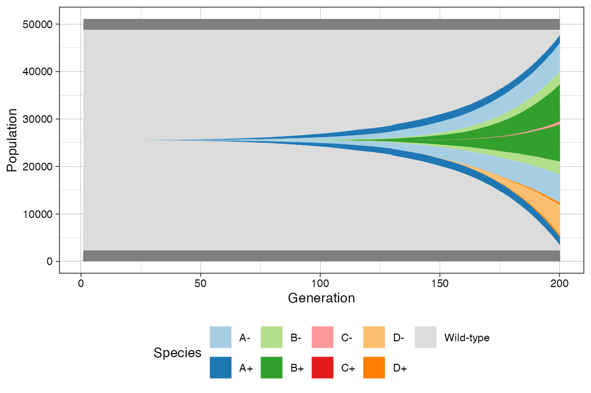
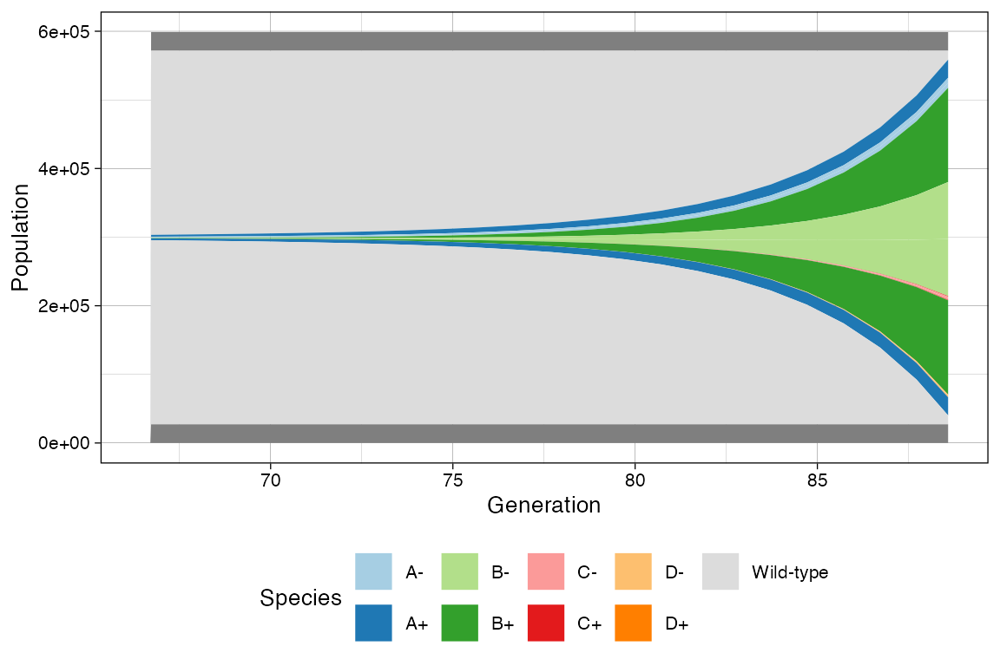
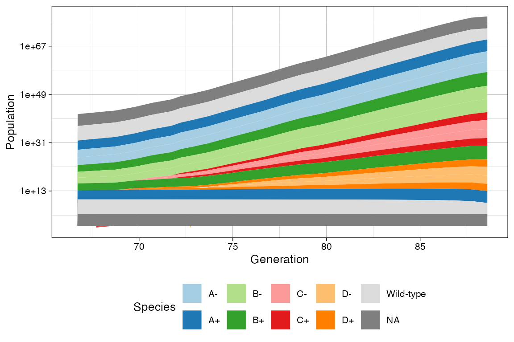
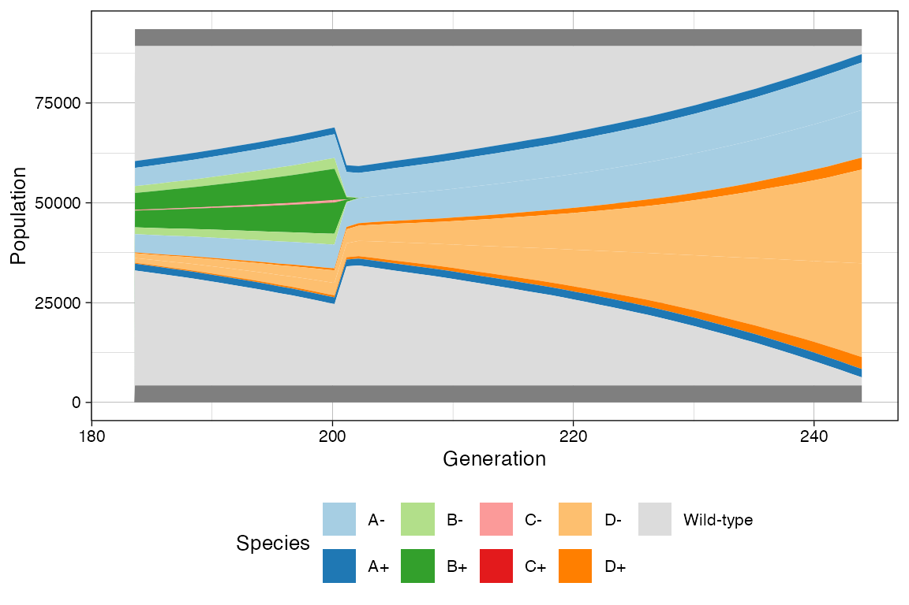
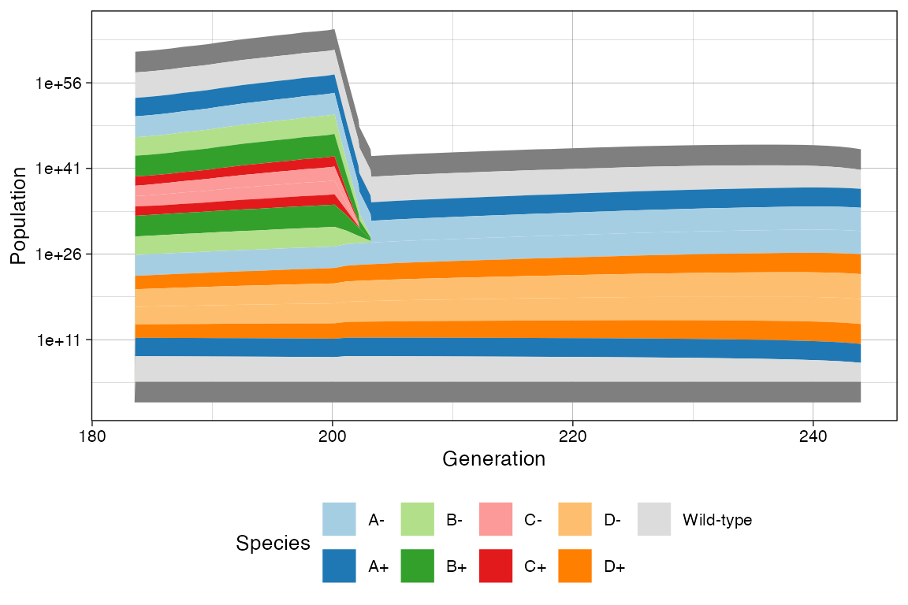

library(rRACES)To simulate a tissue the following steps are required:
creation of a tissue;
introduction of cells in the tissue;
actual simulation.
The simulation is managed by an object of the S4 class
Simulation, wich allows to program the tissue evolution
over time, adding new cells as far as the simulation progresses. The
state of the simulation and tissue can be visualised using
ggplot-powered plots.
Tissue specification
To perform a simulation a new object of class Simulation
must be created.
# Default constructor
sim <- new(Simulation)This automatically builds a 1000x1000-cells tissue - which can host
\(1\) million cells - and sets the name
of the simulation to be
races_<date>_<hour>.
A simulation custom name can be specified as it follows.
# Call your simulation "Test"
sim <- new(Simulation, "Test")In order to save the simulation progresses in the disk and recover it
in the future, use the optional Boolean parameter
save_snapshots. By setting save_snapshots to
TRUE, the simulation progresses will be saved in a
directory whose name is the name of the simulation.
# The progresses of the simulation will saved in the "Test" folder.
# If the directory "Test" already exists an exception is raised.
sim <- new(Simulation, "Test", save_snapshots = TRUE)Class Simulation exports a
Simulation$show() method to get information on the current
object.
sim
#> ── rRACES D S M Test ──────────────────── ▣ A tissue [1000x1000] ⏱ 0 ──
#> ✖ The simulation has no samples yet!The sim object exposes also methods to get information
about the simulation and control it.
# Get the simulation directory, i.e., "Test"
sim$get_name()
#> [1] "Test"
# Get the tissue size, i.e., c(1000,1000)
sim$get_tissue_size()
#> [1] 1000 1000Custom tissue
We can change the tissue size and label it with a name that might appear in some plots.
# Set the tissue name and size to different values
sim$update_tissue("Liver", 1200, 900)
# Get the tissue name, i.e., "Liver"
sim$get_tissue_name()
#> [1] "Liver"
# Get the tissue size, i.e., c(1200,900)
sim$get_tissue_size()
#> [1] 1200 900Species specification
In order to simulate the evolution of some species we need to add
them to sim. This process defines the evolutionary
parameters of the species.
A mutant is a set of cells having the same (potentially unknown) driver mutations. Cells in the same mutant can have different liveness rates due to different epigenetic states.
A species is a mutant with an optional epigenetic state. At
this point in the simulation, the mutant is just a name (A,
B, ..) that, at a later stage could be linked to mutations
of interest. The epigenome is a binary feature of a species that is
represented by epistates +/- (positive and
negative status). This is an abstraction, and could represent an
active/inactive state linked to a promoter methylation or, more broadly,
a phenotype. The evolution of mutants is non-reversible (no-back
mutations model), while the evolution among epistates is potentially
reversible.
For example, if we define two mutants A and
B with their epistates +/-, we
have 4 distinct species: A+ and A-, as well as
B+ and B-.
Hybrid models can be obtained, e.g., a mutant A (with no
epistates), together with B+ and B-.
Evolutionary parameters
We use a notation common in linear birth-death processes. If a
species A has no epistates then its stochastic behaviour is
defined by the state-change rates
\[ \begin{align} \text{(growth)}\quad A & \rightarrow_{\lambda} 2 A \\ \text{(death)}\quad A & \rightarrow_{\delta} \emptyset \end{align} \]
where:
- \(\lambda>0\) is a growth rate for cells that duplicate;
- \(\delta>0\) is a death rate for cells that duplicate.
Instead, if the species has epistate + (denoted \(A_\oplus\)) and - (denoted
\(A_\ominus\)), then its stochastic
behaviour is defined by the state-change rates
\[ \begin{align} \text{(growth +)}\quad A_\oplus & \rightarrow_{\lambda_\oplus} 2 A_\oplus \\ \text{(death +)}\quad A_\oplus & \rightarrow_{\delta_\oplus} \emptyset \\ \text{(growth -)}\quad A_\ominus & \rightarrow_{\lambda_\ominus} 2 A_\ominus \\ \text{(death -)}\quad A_\ominus & \rightarrow_{\delta_\ominus} \emptyset \\ \text{(switch +-)}\quad A_\oplus & \rightarrow_{\epsilon_{+-}} A_\oplus + A_\ominus \\ \text{(switch -+)}\quad A_\ominus & \rightarrow_{\epsilon_{-+}} A_\ominus + A_\oplus \end{align} \]
where the rates \(\lambda\) and \(\delta\) are as above, and \(\epsilon_{+-}\) or \(\epsilon_{-+}\) are the ratesat which cells of a certain epistate duplicate and flip the epigenetic marker of one of the progeny.
sim$add_mutant(name = "A",
epigenetic_rates = c("+-" = 0.01, "-+" = 0.01),
growth_rates = c("+" = 0.2, "-" = 0.08),
death_rates = c("+" = 0.1, "-" = 0.01))
# updated object (counts refer to number of cells of each species)
sim
#> ── rRACES D S M Test ──────────────────────── ▣ Liver [1200x900] ⏱ 0 ──
#>
#> ── Species: 2, with epigenetics
#>
#> ======= ==== ==== ==== ====== ===
#> species λ δ ε counts %
#> ======= ==== ==== ==== ====== ===
#> A- 0.08 0.01 0.01 0 NaN
#> A+ 0.20 0.10 0.01 0 NaN
#> ======= ==== ==== ==== ====== ===
#>
#> ── Firings: 0 total
#> ✖ The simulation has no samples yet!
# Get the simulation species and their rates
sim$get_species()
#> mutant epistate growth_rate death_rate switch_rate
#> 1 A - 0.08 0.01 0.01
#> 2 A + 0.20 0.10 0.01A mutant without epistates could be added as
# Not run
sim$add_mutant(name = "A", growth_rates = 0.2, death_rates = 0.1)To be able to simulate the model, an initial cell needs to be displaced in the tissue.
# We add one cell of species A+ (mutant A in epistate +) in
# position (500, 500).
sim$place_cell("A+", 500, 500)Visualisations
We can query the current state of the simulation, and extract the position of each cell in the tissue.
# Counts per species
sim$get_counts()
#> mutant epistate counts
#> 1 A - 0
#> 2 A + 1
# Cells position (one so far)
sim$get_cells()
#> cell_id mutant epistate position_x position_y
#> 1 0 A + 500 500These information can be plot. Note that the tissue visualisation uses hexagonal bins to avoid rastering delays when the simulation uses thousands of cells.
# Piechar for counts
plot_state(sim)
# Spatial distribution for the whole tissue (hexagonal bins)
plot_tissue(sim)
Note: since the plots are done with
ggplotthey can be assembled and customised.
Species Evolution
There are 4 ways to let the simulation evolve:
- advancing until the number of cells in a species reaches a given threshold \(\theta > 0\);
- advancing until a new time \(t>0\) is reached;
- advancing until a desired number of firings (of one particular event) has occurred;
- advancing until a formula is not satisfied by the simulation status.
Size-Based Simulation
We can run the simulation up to when we have \(\theta > 0\); cells of species
A+
# Counts per species is now 0
sim$get_counts()
#> mutant epistate counts
#> 1 A - 0
#> 2 A + 1
sim$run_up_to_size("A+", 500)
#>
[████████████████████████████████████████] 100% [00m:00s] Saving snapshot
# Counts per species now reports 500 for A+
sim$get_counts()
#> mutant epistate counts
#> 1 A - 123
#> 2 A + 500
plot_tissue(sim)
Firing-Based Simulation
The number of times each event has fired is accessible
# Get the number of fired event per species
sim$get_firings()
#> event mutant epistate fired
#> 1 death A - 8
#> 2 growth A - 87
#> 3 switch A - 8
#> 4 death A + 366
#> 5 growth A + 909
#> 6 switch A + 52A small number of cell deaths have occurred in species
A- up to this point, so we can simulate the system until
there are 100 of them.
sim$run_up_to_event("death", "A-", 100)
#>
[████████████████████████████████████████] 100% [00m:00s] Saving snapshot
# The row "death", for "A" "-" now reports 100
sim$get_firings()
#> event mutant epistate fired
#> 1 death A - 100
#> 2 growth A - 893
#> 3 switch A - 98
#> 4 death A + 3456
#> 5 growth A + 7354
#> 6 switch A + 387
# Plot the tissue by using 200 bins
plot_tissue(sim, num_of_bins = 200)
Clock-Based Simulation
It is also possible to take the current simulation clock as reference, and simulate further.
# Get the simulation clock
sim$get_clock()
#> [1] 64.19203
# Run the simulation for other 15 time units
sim$run_up_to_time(sim$get_clock() + 15)
#>
[████████████████████████████████████████] 100% [00m:00s] Saving snapshot
# Get again the simulation clock
sim$get_clock()
#> [1] 79.19229
plot_tissue(sim)
Formula-Based Simulation (Advanced)
rRACES implements a first order unquantified logic having variables
representing the cardinality of the species, the number of events fired
in a species (being duplications, deaths, or switches), and the
simulation time. These variables and reals values are summed by
+, subtracted by -, and multiplied by
* and form expressions. The expressions are then compared
with the standard semantics by >, >=,
==, !=, <=, and
< to form relations. A formula in this language is
either a relation, the conjunction of two formulas (&),
or the disjunction of two formulas (|).
Any formula in above language expresses a condition on the simulation
status and it can be used as the parameter of the method
Simulation$run_until() to let the simulation evolve until
the condition does not hold.
Variables
The variables represent one among the following quantities:
- the cardinality of a species;
- the number fired event among deaths, duplications and switches in a species;
- the elapse simulation time.
All above variables can be built by using the method
Simulation$var(). When the parameter is the string
"Time", the elapsed simulation time variable is
returned.
# build a simulation and add two species to it
sim2 <- new(Simulation)
sim2$add_mutant(name = "A",
epigenetic_rates = c("+-" = 0.01, "-+" = 0.01),
growth_rates = c("+" = 0.2, "-" = 0.08),
death_rates = c("+" = 0.1, "-" = 0.01))
# get the variable representing the simulation time
v_time <- sim2$var("Time")
v_time
#> TimeWhen the parameter is the name of a species, a variable representing the cardinality of the species is built.
# get the variable representing the cardinality of A+ in sim2
va_p <- sim2$var("A+")
va_p
#> |A+|
# get the variable representing the cardinality of A- in sim2
va_m <- sim2$var("A-")
va_m
#> |A-|Finally, when the parameter is the name of a species followed by a
. and the name of an event among deaths,
duplications, or switches,
Simulation$var() returns the variable associated with the
number of the corresponding event in the specified species.
# get the variable representing the number of epigenetic
# switches from A+
va_ps <- sim2$var("A+.switches")
va_ps
#> |A+.switches|
# get the variable representing the number of duplications in A+
sim2$var("A+.duplications")
#> |A+.duplications|
# get the variable representing the number of deaths in A+
sim2$var("A+.deaths")
#> |A+.deaths|Expressions and Formulas
An expression is one of the following object:
- a variable, e.g.,
sim2$var("A+"); - a numeric value, e.g.,
3.4; - the sum of two expressions, e.g.,
sim2$var("A+") + 3.4; - the subtraction of two expressions, e.g.,
sim2$var("A+") - 3.4; - the multiplication of two expressions, e.g.,
sim2$var("A+") * 3.4.
Two expression can be related by <=,
<, ==, !=, >
and >=.
A formula is:
- a relation among two expressions, e.g.,
sim2$var("A+")>=2; - the conjunction of two formulas, e.g.,
sim2$var("A+")>=2 & sim2$var("A+")<=500; - the disjunction of two formulas, e.g.,
sim2$var("A+")>=2 | sim2$var("A+")<=500.
The method Simulation$run_until() takes as the parameter
a formula and lets the simulation evolve until the formula does not
hold.
# build a condition stating that the cardinality of A+ doubles
# that of A-
c1 <- va_p >= 2 * va_m
c1
#> |A+|>=2*|A-|
# build a condition that holds when there are more than
# 100000 live cells of mutant A
c2 <- va_p + va_m > 1e5
c2
#> |A+|+|A-|>100000
# build a condition that holds when less than 4000
# epigenetic switches from the species A+ have occured
c3 <- va_ps < 4000
c3
#> 4000>|A+.switches|
# build a condition that holds when 40 time unit have been
# simulated at least
c4 <- v_time >= 40
c4
#> Time>=40
# build a condition that holds when c4 and at least one
# among c1, c2, and c3 hold
c5 <- c4 & (c1 | c2 | c3)
c5
#> Time>=40 and (|A+|>=2*|A-| or |A+|+|A-|>100000 or 4000>|A+.switches|)
# place the initial cell
sim2$place_cell("A+", 500, 500)
# run the simulation while c5 does not hold
sim2$run_until(c5)
#>
[████████████████████████████████████████] 100% [00m:00s] Saving snapshot
sim2
#> ──
[43m rRACES
[49m
[37m
[42m D
[49m
[39m
[37m
[41m S
[49m
[39m
[37m
[41m M
[49m
[39m races_20240430-183806 ──
[31m▣
[39mA tissue [1000x1000]
[31m ⏱
[39m40 ──
#>
#> ── Species:
[32m
[32m2
[32m
[39m,
[32m
[32m
[32mwith
[32m
[32m
[39m epigenetics
#>
#> ======= ==== ==== ==== ====== ========
#> species λ δ ε counts %
#> ======= ==== ==== ==== ====== ========
#> A- 0.08 0.01 0.01 55 16.51652
#> A+ 0.20 0.10 0.01 278 83.48348
#> ======= ==== ==== ==== ====== ========
#>
#> ── Firings: 714 total
#>
#> Species [A-]: 3 (deaths), 42 (duplications) and 7 (switches)
#> Species [A+]: 173 (deaths), 466 (duplications) and 23 (switches)
#>
[31m✖
[39m The simulation has no samples yet!
sim2$get_clock()
#> [1] 40.00333Getting Cells (Advanced)
At this point, if we query the simulation we will find more cells (we
use dplyr to process query results). For convenience, the
getters accept parameters to subset the tissue.
# load dplyr to use %>%
require(dplyr)
# Get the cells in the tissue at current simulation time
sim$get_cells() %>% head()
#> cell_id mutant epistate position_x position_y
#> 1 73236 A + 415 494
#> 2 76326 A + 416 481
#> 3 78132 A + 416 493
#> 4 68611 A + 416 494
#> 5 73135 A + 416 501
#> 6 73136 A + 416 502
# Get the cells in the tissue rectangular sample having
# [500,500] and [505,505] as lower and upper corners, respectively
sim$get_cells(c(500, 500), c(505, 505)) %>% head()
#> cell_id mutant epistate position_x position_y
#> 1 71933 A + 500 500
#> 2 60610 A + 500 501
#> 3 73408 A + 500 502
#> 4 64157 A + 500 503
#> 5 59244 A - 500 504
#> 6 52866 A - 500 505
# Get the cells in the tissue having epigenetic state "-"
sim$get_cells(c("A", "B"), c("-")) %>% head()
#> cell_id mutant epistate position_x position_y
#> 1 54513 A - 416 506
#> 2 59158 A - 416 510
#> 3 59157 A - 416 512
#> 4 57052 A - 417 481
#> 5 70530 A - 417 485
#> 6 40445 A - 417 490
# Get the cells in the tissue having epigenetic state "-" and,
# at the same time, belonging to rectangular sample bounded by
# [500,500] and [505,505] as lower and upper corners, respectively
sim$get_cells(c(500, 500), c(505, 505), c("A", "B"), c("-")) %>% head()
#> cell_id mutant epistate position_x position_y
#> 1 59244 A - 500 504
#> 2 52866 A - 500 505
#> 3 41096 A - 502 501
#> 4 46077 A - 502 503
#> 5 51553 A - 502 504
#> 6 42089 A - 503 505Evolving new species
rRACES can select cells from the tissue, randomly for every mutant, or in a constrained tissue area.
# Stochastic sampling from the whole tissue: it can return A+ or A-
sim$choose_cell_in("A")
#> cell_id mutant epistate position_x position_y
#> 1 59145 A + 523 427
# Calling it again may result in a different cell
sim$choose_cell_in("A")
#> cell_id mutant epistate position_x position_y
#> 1 59135 A + 459 478
# Constrain sampling in the tissue rectangular selection [500,550]x[350,450]
sim$choose_cell_in("A", c(500, 350), c(550, 450))
#> cell_id mutant epistate position_x position_y
#> 1 66820 A + 527 444This feature can be used to program the generation of new species, mimicking new mutants that generate subclonal expansions.
Imagine we want to add a new mutant B with epistates –
and therefore new species B+ and B- - as
descending from A,we need to:
locate one cell of mutant
Ain the tissue, which is where we will inject the new mutant;add the specifics of mutant
B(viaSimulation$add_mutant(), as we did forA);implement the change of the cell of mutant
Ato a cell of mutantB.
# We locate a random cell
cell <- sim$choose_cell_in("A")
cell
#> cell_id mutant epistate position_x position_y
#> 1 38877 A - 471 478
# Add mutant
sim$add_mutant(name = "B",
epigenetic_rates = c("+-" = 0.05, "-+" = 0.05),
growth_rates = c("+" = 0.3, "-" = 0.3),
death_rates = c("+" = 0.05, "-" = 0.1))Then we inject the cell, and simulate a little bit.
# Mutant injection
sim$mutate_progeny(cell, "B")
# Generated event A -> B either in + or - epistates is now recorded
sim$get_counts()
#> mutant epistate counts
#> 1 A - 5095
#> 2 A + 17315
#> 3 B - 1
#> 4 B + 0
# New evolution
sim$run_up_to_size("B+", 600)
#>
[█---------------------------------------] 2% [00m:00s] Cells: 80105
[██████----------------------------------] 14% [00m:00s] Cells: 127671
[████████████----------------------------] 28% [00m:01s] Cells: 163611
[████████████████████--------------------] 49% [00m:02s] Cells: 194850
[██████████████████████████████----------] 73% [00m:03s] Cells: 221281
[███████████████████████████████████████-] 96% [00m:04s] Cells: 246277
[████████████████████████████████████████] 100% [00m:05s] Saving snapshotAt this point, we can inspect in more details the tissue. It can help to facet on the species to clearly appreciate the spatial diffusion of the populations.
plot_state(sim)
plot_tissue(sim, num_of_bins = 250)
# Facet on species via ggplot
library(ggplot2)
plot_tissue(sim, num_of_bins = 250) + facet_wrap(~species)
If, at this point in the simulation, we generate a new mutant
C from A in the rectangle \([450,500]\times [550, 600]\).
# Define evolutionary parameters
sim$add_mutant(name = "C",
epigenetic_rates = c("+-" = 0.1, "-+" = 0.1),
growth_rates = c("+" = 0.2, "-" = 0.4),
death_rates = c("+" = 0.1, "-" = 0.01))
# Choose and mutate
sim$mutate_progeny(sim$choose_cell_in("A", c(450, 550), c(500, 600)), "C")
sim$run_up_to_time(sim$get_clock() + 7)
#>
[██████████████████████████████████████--] 94% [00m:00s] Cells: 274385
[███████████████████████████████████████-] 95% [00m:00s] Cells: 299003
[███████████████████████████████████████-] 95% [00m:01s] Cells: 321540
[███████████████████████████████████████-] 96% [00m:02s] Cells: 342854
[███████████████████████████████████████-] 96% [00m:03s] Cells: 362743
[███████████████████████████████████████-] 97% [00m:04s] Cells: 382111
[███████████████████████████████████████-] 97% [00m:05s] Cells: 400059
[████████████████████████████████████████] 98% [00m:06s] Cells: 417457
[████████████████████████████████████████] 98% [00m:07s] Cells: 434629
[████████████████████████████████████████] 98% [00m:08s] Cells: 451596
[████████████████████████████████████████] 99% [00m:09s] Cells: 468167
[████████████████████████████████████████] 99% [00m:10s] Cells: 483814
[████████████████████████████████████████] 99% [00m:11s] Cells: 498935
[████████████████████████████████████████] 99% [00m:12s] Cells: 514746
[████████████████████████████████████████] 100% [00m:13s] Saving snapshot
plot_state(sim)
plot_tissue(sim, num_of_bins = 250)
Other Operations
Injection of Cells over a Tissue
On the tissue, we can inject multiple cells manually; all injected cells can be retrieved.
# Now it will return just the initial cell
sim$get_added_cells()
#> mutant epistate position_x position_y time
#> 1 A + 500 500 0Avoiding Drift
Any species that has a non-zero death rate can become extinct stochastically by drift.
Drift makes it difficult to simulate an be confident of what species are in the model. To facilitate the user, RACES can avoid drift by setting a death activation level. This value is the minimum number of cells that enables cell death in a species: a cell of species \(S\) can die if and only if \(S\) has reached the death activation level at least once during the simulation.
This threshold holds for all the species and it is set to 1 by default.
sim$death_activation_level
#> [1] 50
# Change death activation level
sim$death_activation_level <- 50Time Series Data
It is convenient sometimes to plot a time series of a simulation, reporting species or firing counts over time. Since rRACES is programmable, it is immediate to make a for-loop algorithm and collect the simulation data over time.
Default History-Based Data
However, this is not required because at the end of any
run_to_* methods, RACES stores the data about the number of
species cells, and that of event firings. These data can be
extracted.
# The firings
sim$get_firing_history() %>% head()
#> event mutant epistate fired time
#> 1 death A - 8 44.46369
#> 2 growth A - 87 44.46369
#> 3 switch A - 8 44.46369
#> 4 death A + 366 44.46369
#> 5 growth A + 909 44.46369
#> 6 switch A + 52 44.46369
# For example, total number of the deaths on `B+` at the end of the
# previous calls of the `run_to_*` methods
sim$get_firing_history() %>%
filter(event == "death", mutant == "B", epistate == "-")
#> event mutant epistate fired time
#> 1 death B - 0 44.46369
#> 2 death B - 0 64.19203
#> 3 death B - 0 79.19229
#> 4 death B - 224 102.41148
#> 5 death B - 1401 109.41148
# The counts
sim$get_count_history() %>% head()
#> mutant epistate count time
#> 1 A - 123 44.46369
#> 2 A + 500 44.46369
#> 3 B - 0 44.46369
#> 4 B + 0 44.46369
#> 5 C - 0 44.46369
#> 6 C + 0 44.46369The time-series can be plot using plot_timeseries()
# Time-series plot
plot_timeseries(sim)
Custom Time-Series
If the default time-series is not enough coarse-grained, one can set
Simulation$history_delta to increase the sampling rate of
the state (by default, Simulation$history_delta is set to
\(0\)).
We show this by re-simulating a tumour with two submutants.
# Example time-series on a new simulation, with coarse-grained time-series
sim <- new(Simulation, "Finer Time Series")
sim$history_delta <- 1
sim$death_activation_level <- 100
# A
sim$add_mutant(name = "A",
epigenetic_rates = c("+-" = 0.01, "-+" = 0.01),
growth_rates = c("+" = 0.2, "-" = 0.08),
death_rates = c("+" = 0.1, "-" = 0.01))
sim$place_cell("A+", 500, 500)
sim$run_up_to_size("A+", 400)
#>
[████████████████████████████████████████] 100% [00m:00s] Saving snapshot
# B (linear inside A)
sim$add_mutant(name = "B",
epigenetic_rates = c("+-" = 0.05, "-+" = 0.05),
growth_rates = c("+" = 0.3, "-" = 0.3),
death_rates = c("+" = 0.05, "-" = 0.1))
sim$mutate_progeny(sim$choose_cell_in("A"), "B")
sim$run_up_to_size("B-", 300)
#>
[████████████████████████████████████████] 100% [00m:00s] Saving snapshot
# C (linear inside B)
sim$add_mutant(name = "C",
epigenetic_rates = c("+-" = 0.1, "-+" = 0.1),
growth_rates = c("+" = 0.2, "-" = 0.4),
death_rates = c("+" = 0.1, "-" = 0.01))
sim$mutate_progeny(sim$choose_cell_in("B"), "C")
# D (linear inside A, so branching with C) - same parameters of C
sim$add_mutant(name = "D",
epigenetic_rates = c("+-" = 0.1, "-+" = 0.1),
growth_rates = c("+" = 0.2, "-" = 0.4),
death_rates = c("+" = 0.1, "-" = 0.01))
sim$mutate_progeny(sim$choose_cell_in("A"), "D")
sim$run_up_to_size("D+", 1000)
#>
[███-------------------------------------] 6% [00m:00s] Cells: 78004
[██████----------------------------------] 14% [00m:00s] Cells: 125850
[█████████-------------------------------] 20% [00m:01s] Cells: 165905
[██████████------------------------------] 24% [00m:02s] Cells: 200461
[██████████████--------------------------] 33% [00m:03s] Cells: 232947
[████████████████------------------------] 38% [00m:04s] Cells: 263033
[██████████████████----------------------] 43% [00m:05s] Cells: 290062
[████████████████████--------------------] 48% [00m:06s] Cells: 315524
[██████████████████████------------------] 52% [00m:07s] Cells: 339390
[████████████████████████----------------] 58% [00m:08s] Cells: 362479
[███████████████████████████-------------] 65% [00m:09s] Cells: 383534
[█████████████████████████████-----------] 70% [00m:10s] Cells: 404599
[██████████████████████████████----------] 74% [00m:11s] Cells: 425029
[█████████████████████████████████-------] 81% [00m:12s] Cells: 443988
[███████████████████████████████████-----] 85% [00m:13s] Cells: 462484
[█████████████████████████████████████---] 90% [00m:14s] Cells: 480756
[██████████████████████████████████████--] 94% [00m:15s] Cells: 498394
[████████████████████████████████████████] 99% [00m:16s] Cells: 516057
[████████████████████████████████████████] 100% [00m:17s] Saving snapshotThe time-series can be plot using plot_timeseries().
# Time-series plot
plot_timeseries(sim)
# Logscale helps seeing the different effective growth rates
plot_timeseries(sim) + ggplot2::scale_y_log10()
#> Warning in ggplot2::scale_y_log10(): log-10 transformation introduced infinite values.
#> log-10 transformation introduced infinite values.
Muller Plot
We can also get a Muller plot of the evolution using ggmuller.
# default Muller plot
plot_muller(sim)
In this case every population is annotated as a descendant of the ancestor mutant. Note however that reversible espistates do not fit a traditional Muller plot because they violate the no-back mutation model.
In this case, rRACES will show first the epistate that was randomly injected in the simulation, and the second will result by linear. This is not a completely correct perspective of the simulation time-series; still, it help understand trends.
# Custom Mullers
clock <- sim$get_clock()
plot_muller(sim) + ggplot2::xlim(clock * 3/4, clock)
plot_muller(sim) +
ggplot2::xlim(clock * 3/4, clock) +
ggplot2::scale_y_log10()
Time-Varying Evolutionary Rates
You can model the fact that the rates of one species. For instance, this happens when a population is subject to a targeted treatment.
Considering the example above, where C and
D have the same rates, we increase the death rate of both
C+ and C- species, as well as B+
and B-.
# Current rates
sim
#>
#> ======= ==== ==== ==== ====== ==========
#> species λ δ ε counts %
#> ======= ==== ==== ==== ====== ==========
#> A- 0.08 0.01 0.01 14630 2.8219763
#> A+ 0.20 0.10 0.01 52828 10.1899771
#> B- 0.30 0.10 0.05 166090 32.0370503
#> B+ 0.30 0.05 0.05 274615 52.9704049
#> C- 0.40 0.01 0.10 4688 0.9042669
#> C+ 0.20 0.10 0.10 1615 0.3115169
#> D- 0.40 0.01 0.10 2965 0.5719180
#> D+ 0.20 0.10 0.10 1000 0.1928897
#> ======= ==== ==== ==== ====== ==========
#>
#> Species [A-]: 1303 (deaths), 12217 (duplications) and 1337 (switches)
#> Species [A+]: 50520 (deaths), 107065 (duplications) and 5053 (switches)
#> Species [B-]: 58335 (deaths), 204870 (duplications) and 29272 (switches)
#> Species [B+]: 49200 (deaths), 343370 (duplications) and 48827 (switches)
#> Species [C-]: 108 (deaths), 5510 (duplications) and 1154 (switches)
#> Species [C+]: 398 (deaths), 1298 (duplications) and 440 (switches)
#> Species [D-]: 72 (deaths), 3436 (duplications) and 665 (switches)
#> Species [D+]: 249 (deaths), 849 (duplications) and 266 (switches)
# Raise the death rate levels
sim$update_rates("B+", c(death = 3))
sim$update_rates("B-", c(death = 3))
sim$update_rates("C+", c(death = 3))
sim$update_rates("C-", c(death = 3))
# Now D will become larger
sim$run_up_to_size("D+", 6000)
#>
[███████---------------------------------] 17% [00m:00s] Cells: 456293
[███████---------------------------------] 17% [00m:00s] Cells: 379481
[████████--------------------------------] 18% [00m:01s] Cells: 286363
[█████████-------------------------------] 21% [00m:02s] Cells: 170668
[███████████████████---------------------] 45% [00m:03s] Cells: 99085
[████████████████████████████████████████] 100% [00m:04s] Saving snapshot
# Current state
sim
#>
#> ======= ==== ==== ==== ====== ==========
#> species λ δ ε counts %
#> ======= ==== ==== ==== ====== ==========
#> A- 0.08 0.01 0.01 23112 17.7318132
#> A+ 0.20 0.10 0.01 82617 63.3847877
#> B- 0.30 3.00 0.05 5 0.0038361
#> B+ 0.30 3.00 0.05 3 0.0023016
#> C- 0.40 3.00 0.10 0 0.0000000
#> C+ 0.20 3.00 0.10 0 0.0000000
#> D- 0.40 0.01 0.10 18605 14.2739869
#> D+ 0.20 0.10 0.10 6000 4.6032745
#> ======= ==== ==== ==== ====== ==========
#>
#> Species [A-]: 2081 (deaths), 19381 (duplications) and 2128 (switches)
#> Species [A+]: 79227 (deaths), 167657 (duplications) and 7940 (switches)
#> Species [B-]: 248750 (deaths), 227181 (duplications) and 32501 (switches)
#> Species [B+]: 357997 (deaths), 379574 (duplications) and 54075 (switches)
#> Species [C-]: 5551 (deaths), 6398 (duplications) and 1349 (switches)
#> Species [C+]: 2322 (deaths), 1474 (duplications) and 502 (switches)
#> Species [D-]: 464 (deaths), 21983 (duplications) and 4325 (switches)
#> Species [D+]: 1416 (deaths), 4501 (duplications) and 1411 (switches)
# This now show the change in rates
clock <- sim$get_clock()
plot_muller(sim) + ggplot2::xlim(clock * 3/4, clock)
plot_muller(sim) +
ggplot2::xlim(clock * 3/4, clock) +
ggplot2::scale_y_log10()